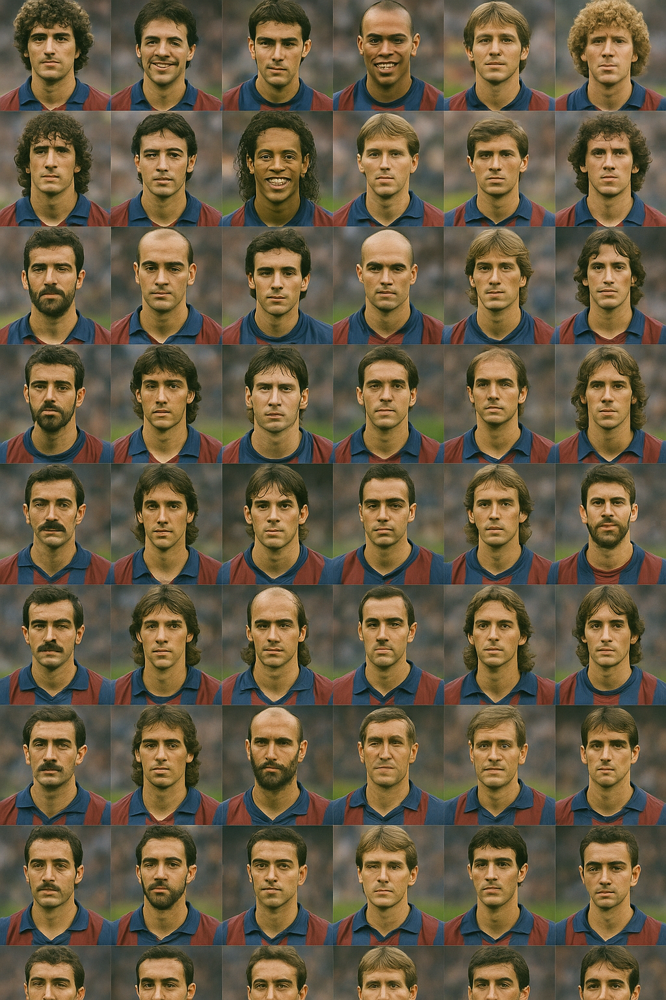
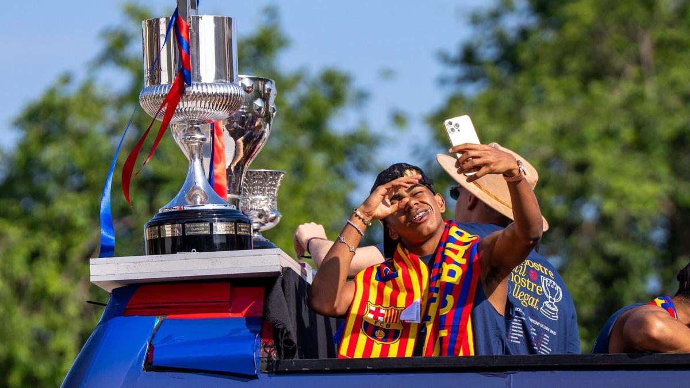
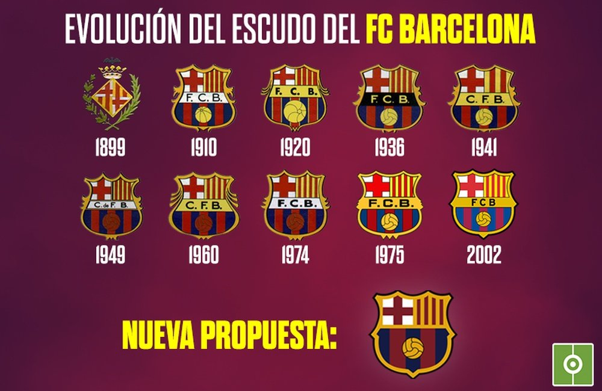
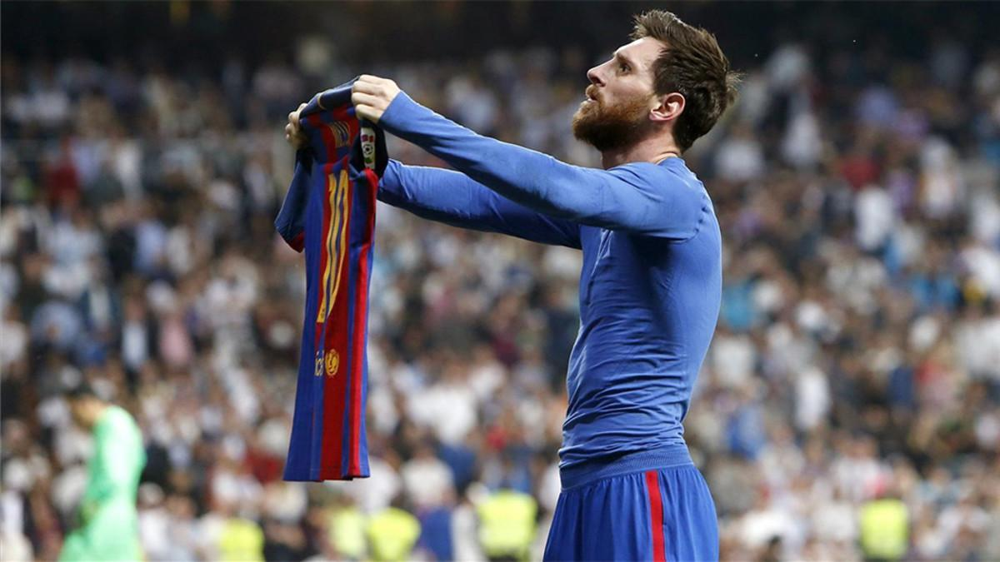
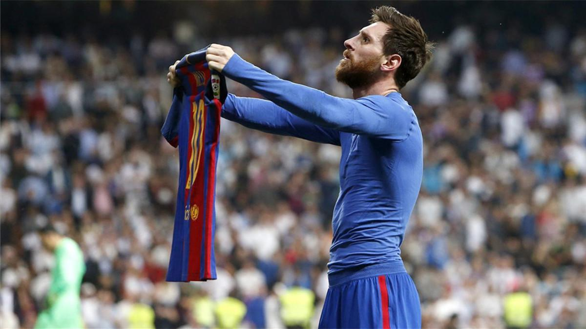

Història del Club
El FC Barcelona va ser fundat el 29 de novembre de 1899 per Joan Gamper. El club ha estat un símbol de Catalunya i de la seva cultura.
Durant la seva història, el Barça ha viscut èpoques daurades com amb Johan Cruyff als anys 90 i Pep Guardiola entre 2008 i 2012, amb un estil de joc únic conegut com el “tiki-taka”.
El lema "Més que un club" expressa el compromís social i polític del Barça amb la societat catalana.
Jugadors Històrics del FC Barcelona
- Ladislao Kubala
- César Rodríguez
- Josep Samitier
- Ricardo Zamora
- Antoni Ramallets
- Luis Suárez Miramontes
- Johan Cruyff
- Carles Rexach
- Migueli (Miguel Bernardo)
- Diego Maradona
- Ronald Koeman
- Michael Laudrup
- Hristo Stoichkov
- Romário
- Pep Guardiola
- Luís Figo
- Rivaldo
- Patrick Kluivert
- Xavi Hernández
- Andrés Iniesta
- Carles Puyol
- Víctor Valdés
- Samuel Eto’o
- Thierry Henry
- Lionel Messi
- Gerard Piqué
- Sergio Busquets
- Dani Alves
- David Villa
- Cesc Fàbregas
- Pedro Rodríguez
- Zlatan Ibrahimović
- Neymar Jr.
- Luis Enrique
- Deco
- Iván de la Peña
- José Ramón Alexanko
- Txiki Begiristain
- Juliano Belletti
- Sergi Barjuán
- Abelardo Fernández
- Johan Neeskens
- José María Bakero
- Albert Ferrer
- Lamine Yamal
Trofeus
Amb una trajectòria plena d'èxits, el FC Barcelona ha guanyat desenes de títols nacionals i internacionals al llarg de la seva història.
El club és reconegut per haver aconseguit el sextet l'any 2009: Lliga, Copa, Champions, Supercopa d’Espanya, Supercopa d’Europa i Mundial de Clubs.
- Lliga: 27 títols
- Copa del Rei: 32 títols
- Champions League: 5 títols
- Supercopa d’Espanya: 15 títols
- Mundial de Clubs: 3 títols

Temporada 2024/25
Rendiment
- Lliga: 3r lloc provisional
- Champions: quarts de final
- Copa del Rei: semifinalista
Nous fitxatges
- João Cancelo
- İlkay Gündoğan
- İñigo Martínez
Entrenador
Hansi Flick ha renovat fins al 2027, assegurant la continuïtat del projecte esportiu.
Títols de la Temporada 2025
El FC Barcelona ha guanyat 3 títols aquesta temporada:
Plantilla Actualitzada 2025
Porters
- Marc-André ter Stegen (Alemanya)
- Wojciech Szczęsny (Polònia)
- Iñaki Peña (Espanya)
- Ander Astralaga (Espanya)
- Diego Kochen (EE.UU.)
- Áron Yaakobishvili (Hongria)
Defensors
- Pau Cubarsí (Espanya) – Ascendit des del filial
- Alejandro Balde (Espanya)
- Ronald Araújo (Uruguai)
- Íñigo Martínez (Espanya)
- Andreas Christensen (Dinamarca)
- Jules Koundé (França)
- Eric García (Espanya)
- Marc Bernal (Espanya) – Ascendit des del filial
- Marc Casadó (Espanya) – Ascendit des del filial
- Héctor Fort (Espanya) – Ascendit des del filial
- Gerard Martín (Espanya) – Ascendit des del filial
- Sergi Domínguez (Espanya) – Ascendit des del filial
- Alexis Olmedo (Espanya) – Ascendit des del filial
- Andrés Cuenca (Espanya) – Ascendit des del filial
- Landry Farré (Espanya) – Ascendit des del filial
- Jofre Torrents (Espanya) – Ascendit des del filial
Centrecampistes
- Dani Olmo (Espanya) – Fitxatge des del RB Leipzig
- Frenkie de Jong (Països Baixos)
- Gavi (Espanya)
- Pedri (Espanya)
- Fermín López (Espanya)
- Pablo Torre (Espanya)
- Marc Bernal (Espanya) – Ascendit des del filial
- Marc Casadó (Espanya) – Ascendit des del filial
- Guille Fernández (Espanya) – Ascendit des del filial
- Noah Darvich (Alemanya) – Ascendit des del filial
Davanters
- Robert Lewandowski (Polònia)
- Raphinha (Brasil)
- Ansu Fati (Espanya)
- Ferran Torres (Espanya)
- Lamine Yamal (Espanya) – Ascendit des del filial
- Pau Víctor (Espanya) – Ascendit des del filial
- Toni Fernández (Espanya) – Ascendit des del filial
- Antonio Fernández (Espanya) – Ascendit des del filial
Escuts Històrics del FC Barcelona
Aquestes són totes les versions de l'escut que ha tingut el Barça al llarg de la seva història:
Seccions Clàssiques i Informatives
Palmarès
Més de 90 títols oficials: 26 Lligues, 31 Copes, 5 Champions, 3 Mundials de clubs i més.
Estadi i Sedes
El Camp Nou, amb capacitat per a més de 99.000 espectadors, és el major estadi d'Europa.
La Ciutat Esportiva Joan Gamper allotja entrenaments i la Masia.
Plantilla actual i C.Tècnic
Inclou jugadors com Ter Stegen, Lewandowski, Gavi, Lamine Yamal i entrenats per Xavi Hernández.
Presidentes del club
Laporta, Núñez, Gaspart... han marcat èpoques diferents de gestió esportiva i econòmica.
Evolució de l'Escut i Equipacions
L'escut ha canviat poc, però manté els símbols catalans i colors blaugrana.
Les samarretes han evolucionat amb estils moderns.
Leyendes i Entrenadors
Messi, Iniesta, Xavi, Ronaldinho... i tècnics com Cruyff, Guardiola i Rijkaard han deixat petjada.
La Masia
Cantera d'on han sorgit figures com Messi, Busquets, Piqué, i ara Gavi i Yamal.
Rivalitats
El Clàssic amb el Real Madrid és el duel més famós.
També destaca el derbi amb l'Espanyol.
Barça Femení i Barça Atlètic
L'equip femení és campió d'Europa, i el filial forma joves promeses del futbol.
Seccions d’Actualitat
Calendari i Resultats
Jornada rere jornada, el Barça manté l’objectiu de lluitar per tot.
Visita el web oficial per veure el calendari actualitzat.
Rumors i Fitxatges
S'especula amb nous reforços per la defensa i el mig del camp.
També es parla d'una possible tornada de Messi com ambaixador.
Jugador del mes i Gols destacats
Lamine Yamal ha estat escollit millor jugador de març.
Gols de Pedri i Lewandowski han estat virals.
Part Mèdic i Lesions
Gavi lesionat fins final de temporada.
Araujo recuperant-se.
Seccions Multimèdia
📊 Enquesta: Qui guanyarà La Lliga 2025/26?
 
